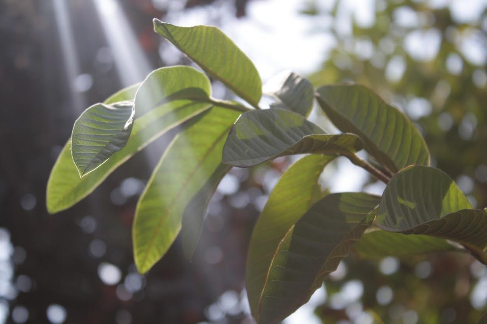
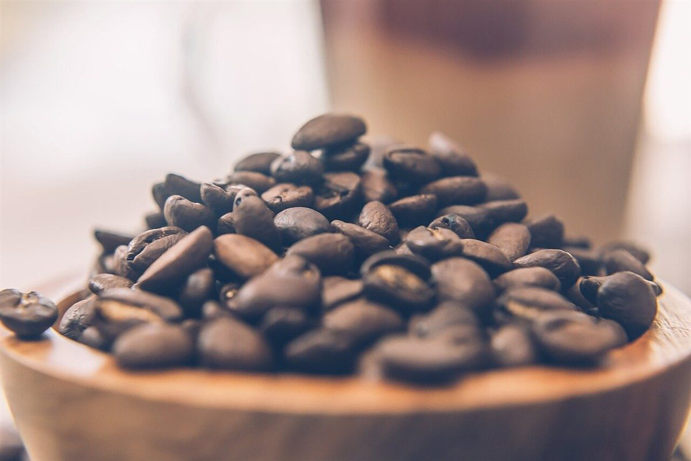
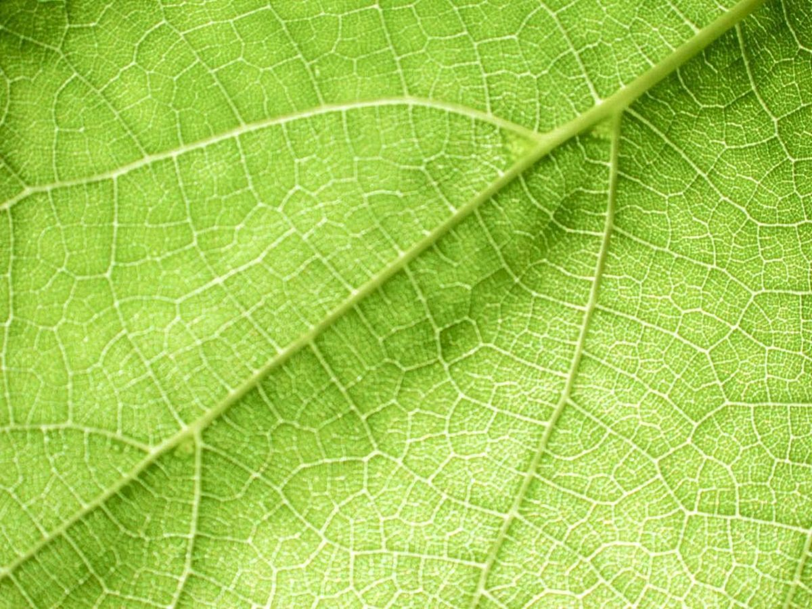

抹茶

珈琲
カフェ / 岐阜県大垣市丸の内
抹茶珈琲姉妹
岐阜県大垣市丸の内2丁目にあるカフェ「抹茶珈琲姉妹」のご案内ページです。営業時間やメニューなど、詳しいことは準備中。まずはInstagramをのぞいてみてください。
制作側の連想
屋号の文字が左右に分かれて見えたので、天秤にしてみた
屋号の由来や、どんなお店なのかは分かりません。制作側は、屋号の「抹茶」「珈琲」という二つの言葉を眺めていて、天秤の左右の皿を連想しました。左を緑、右を茶の色に分けているのは、この連想から決めた配色です。提供内容を示すものではなく、お店の理念・由来とも無関係です。このサイトでは、二つの皿が水平になるように、左右のものを並べて見せていきます。
二つの皿(写真はイメージ)
左の皿、右の皿。
写真はお店のものではなく、国外または撮影地不明のフリー素材です。色合いの対比だけで選びました。





ご案内
確認できていること
| 所在地 | 〒503-0888 岐阜県大垣市丸の内2丁目21 |
|---|---|
| 電話 | なし |
| 営業時間 | 準備中 |
| 定休日 | 準備中 |
| ご予約 | 準備中 |
| 駐車場 | 準備中 |
| SNS | Instagram @matchacoffeesisters |